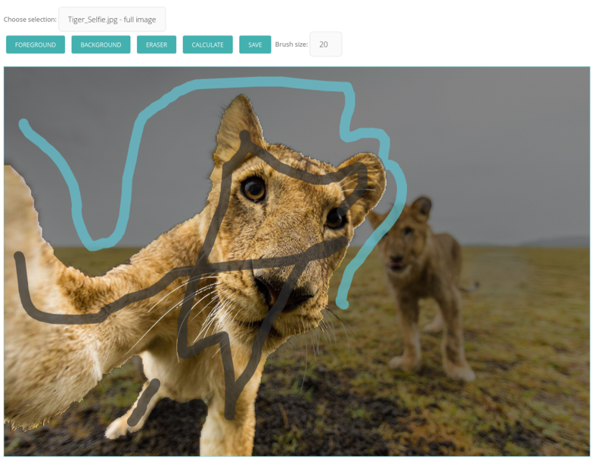

Nutzungsanleitung¶
Im folgenden ein erklärender Überblick der Funktionen im CMS-Bereich.
Bilder einpflegen¶
Bilder können ganz einfachen in dem Image-Reiter über den ‘+ ADD AN IMAGE’-Button hinzugefügt werden. In dem sich öffnenden Fenster können einzelne Bilder über Drag-and-Drop hinzugefügt werden oder via File-Chooser ganze Listen ausgewählt werden. Nach dem erfolgten Upload können allgemeine Tags hinzugefügt werden, für spezifischere Tags bietet sich die spätere Detailansicht an.
Richtig Taggen¶
Möchte man einzelne Bereiche genauer definieren, so kann man über den Link ‘Images’ im Adminmenü das gewünschte Bild auswählen. In der Detailansicht ist es nun möglich rechteckige Bereiche in dem Bild auszuwählen und mit Tags zu verknüpfen. Hierfür müssen vor dem Abspeichern des Bildes die gewünschten Tags und Bildbereiche aktiviert werden (werden grau hinterlegt) und mit Enter oder dem ‘Save Connections’-Button bestätigt werden. Die Tags und Bereiche werden wieder deaktiviert und zwischengespeichert.
Wird ein Bildbereich ausgewählt, der bereits mit Tags verknüpft ist, so werden diese ebenso aktiviert und vice versa. Hat man einmal zu viele Aktivierung um sie händisch wieder zu deaktivieren hilft der ‘Cancel’-Button, der alle Aktivierung wieder zurücksetzt. Mit dem ‘Delete Scope’-Button kann man den aktiven Bildbereich löschen.

Je nach Projektthema sind unterschiedliche Kategorien denkbar. Wer erst einmal allgemeine Kategorien und Tags haben will, kann sich an folgender Auflistung orientieren:
Perspektivenbeschreibungen:
- Zentralperspektive
- 2-Punkt-Perspektive
- Froschperspektive
- Vogelperspektive
- Fischaugenprojektion
- Panoramabild
- Nahaufnahme
Farbbeschreibung:
- Schwarz/Weiß
- monochrom
- bunt
- Naturfarben
- Infrarot
- Pastell
Stilbeschreibung:
- Fotorealismus
- Romantik
- Surrealismus
- Expressionismus
- Realismus
- Moderne
- Postmoderne
- Sciencefiction
- Psychedelisch
Wenn die Kapazitäten nicht vorhanden sind die Tags händisch einzupflegen, ist es naheliegend eine KI zur Objekterkennung anzubinden.
Bilder ausschneiden¶
In der Detailansicht kann man sich direkt oder nach erfolgtem Taggen in die Zuschnittoberfläche navigieren lassen. Das obere Dropdown-menu bietet die (zuvor) gespeicherten Bildausschnitte zur Bearbeitung an. Mit den darunter eingefügten Buttons kann man sich seine Werkzeuge für die Flächenmarkierung auswählen, desweiteren kann über die rechte Maustaste hinein und heraus gezoomt werden. Der verwendete GrabCut-Algorithmus verlangt eine markierte Vorder- und Hintergrundfläche. Um ein Gefühl zu bekommen, wie sich der Algorithmus verhält, spielt man am besten ein wenig herum und lässt sich die Zwischenstände über den ‘Calculate’-Button berechnen. Ist man mit dem Ergebnis zufrieden, so betätigt man den ‘Save’-Button, der eine Berechnung mit der größten Auflösung durchführt und das Ergebnis in das Modell speichert.
Beschreibung hinzufügen¶
Über den Explorer-Reiter können die einzelnen Bildseiten ausgewählt und angepasst werden. Neben der Beschreibung in einem Richtextfield können auch das Intro und die Front-Flag verändert werden. Das Richtextfield bietet einen intuitiven WYSIWYG-Editor mit dem es möglich ist externe Links und Dokumente einzupflegen.